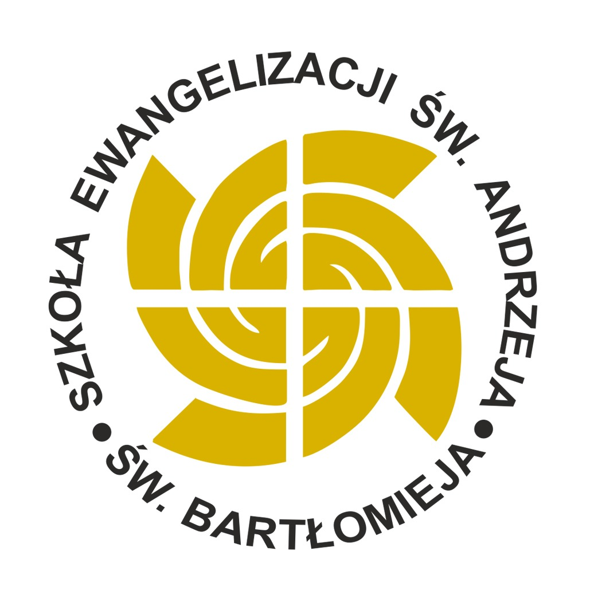
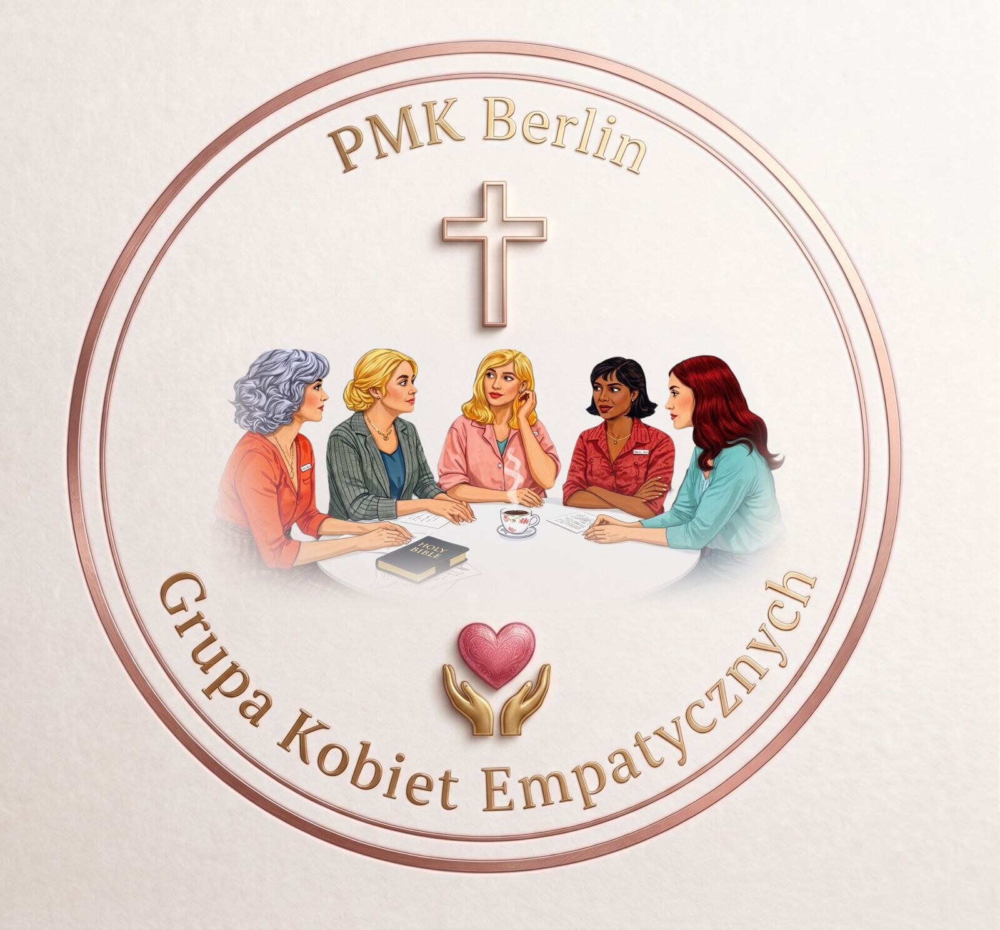

Wspólnoty
Grupy parafialne
Nasza parafia żyje dzięki wspólnotom. Znajdź grupę, która odpowiada Twojemu powołaniu i dołącz do nas.
Nasza parafia żyje dzięki wspólnotom. Znajdź grupę, która odpowiada Twojemu powołaniu i dołącz do nas.

Formacja i pogłębianie wiary przez studium Pisma Świętego

Wspólnota małżeństw budujących Kościół w swoich domach

Wzbogacanie liturgii współczesnymi śpiewami religijnymi

Formacja chrześcijańska prowadząca do dojrzałej wiary
Oddanie się Matce Bożej i apostolstwo w codzienności
Modlitwa różańcowa łącząca wiernych na całym świecie
Wspólnota młodych oddanych Matce Bożej

Wspólnota modlitwy i wsparcia dla mediów katolickich

Modlitwa o łaskę dobrego przejścia do wieczności

Braterstwo mężczyzn wspierających się w wierze i życiu

Siostrzana wspólnota kobiet dzielących się wiarą i życiem